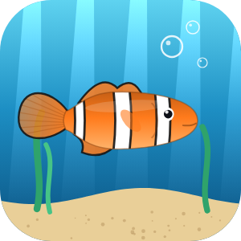
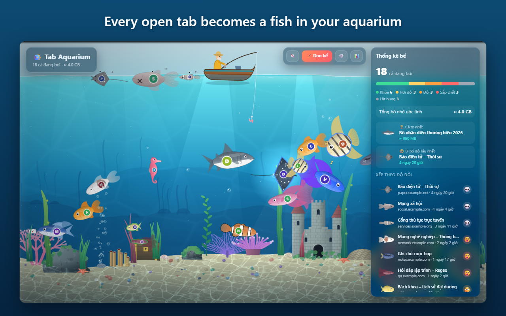

Tab Aquarium
Your open tabs, as a living aquarium. Heavy tabs become big fish, tabs you ignore get hungry.

Privacy policy · Chính sách quyền riêng tư
Tab Aquarium – Privacy Policy
In short: Tab Aquarium does not collect, send, sell or share any personal data. Everything it uses stays inside Microsoft Edge on your own device. There is no server, no account, no analytics and no advertising.
1. What the extension reads
- Your open tabs: each tab's address (URL), title and state: whether it is active, pinned, playing audio or put to sleep (discarded), its tab group name and color, and which window it belongs to. This is read only to draw the aquarium and is not saved.
- When each tab was last viewed: saved on your device as a tab number and a time.
- Technical page metrics: on regular web pages (http and https), the extension runs a small read-only function that returns four numbers: the JavaScript memory in use, the number of page elements, the number of loaded resources, and the number of video, canvas and iframe elements. These numbers are used to estimate how heavy a tab is. The function does not read page text, form fields, passwords, cookies or any other content, and does not change the page. The results are saved on your device as a tab number and these numbers.
- Your settings: hunger time limits, sound on/off and the day/night mode.
- Website icons (favicons): displayed through the browser's built-in favicon service on your device. The extension does not download them from websites.
2. Where the data is stored
Data is kept only in the extension's local storage on your device (storage.local). A short note of which tab is active in each window is kept in session storage (storage.session) and is cleared when the browser closes. When you close a tab, its records are removed.
3. What the extension does not do
- It does not send any data to any server. It makes no network requests of its own.
- It has no analytics, tracking, advertising or remote code.
- It does not sell, rent or share data with anyone.
- It only closes a tab after you confirm in a dialog (net, "Clean tank" or the fishing hook).
4. How to delete your data
Remove the extension from edge://extensions. Microsoft Edge then deletes all data the extension stored.
5. Changes to this policy
If this policy changes, the new version will be published at this address with a new effective date.
6. Contact
Questions about this policy: mrduynguyen2005@gmail.com
Tab Aquarium – Chính sách quyền riêng tư
Tóm tắt: Tab Aquarium không thu thập, không gửi đi, không bán và không chia sẻ dữ liệu cá nhân. Mọi thứ tiện ích dùng đều nằm trong Microsoft Edge trên chính máy của bạn. Không có máy chủ, không tài khoản, không thống kê người dùng, không quảng cáo.
1. Tiện ích đọc những gì
- Các tab đang mở: địa chỉ (URL), tiêu đề và trạng thái của từng tab: có đang mở không, có được ghim không, có đang phát âm thanh không, có đang ngủ (discarded) không, tên và màu của nhóm tab, tab thuộc cửa sổ nào. Thông tin này chỉ được đọc để vẽ bể cá và không được lưu lại.
- Thời điểm xem gần nhất của mỗi tab: lưu trên máy bạn dưới dạng số hiệu tab và một mốc thời gian.
- Chỉ số kỹ thuật của trang: trên các trang web thông thường (http và https), tiện ích chạy một hàm nhỏ chỉ đọc, trả về bốn con số: bộ nhớ JavaScript đang dùng, số phần tử trên trang, số tài nguyên đã tải, và số phần tử video, canvas, iframe. Các con số này dùng để ước tính độ nặng của tab. Hàm này không đọc chữ trên trang, ô nhập liệu, mật khẩu, cookie hay bất kỳ nội dung nào khác, và không thay đổi trang. Kết quả được lưu trên máy bạn dưới dạng số hiệu tab và các con số đó.
- Cài đặt của bạn: các mốc thời gian đói, bật/tắt âm thanh, chế độ ngày/đêm.
- Biểu tượng trang web (favicon): hiển thị qua dịch vụ favicon có sẵn của trình duyệt trên máy bạn. Tiện ích không tải biểu tượng từ các trang web.
2. Dữ liệu được lưu ở đâu
Dữ liệu chỉ nằm trong bộ nhớ cục bộ của tiện ích trên máy bạn (storage.local). Một ghi chú ngắn về tab đang mở ở mỗi cửa sổ được giữ trong bộ nhớ phiên (storage.session) và tự xóa khi đóng trình duyệt. Khi bạn đóng một tab, dữ liệu của tab đó bị xóa.
3. Những gì tiện ích không làm
- Không gửi dữ liệu tới bất kỳ máy chủ nào. Tiện ích không tự thực hiện kết nối mạng nào.
- Không có thống kê người dùng, theo dõi, quảng cáo hay mã tải từ xa.
- Không bán, cho thuê hay chia sẻ dữ liệu với bất kỳ ai.
- Chỉ đóng tab sau khi bạn xác nhận trong hộp thoại (vợt, "Dọn bể" hoặc lưỡi câu).
4. Cách xóa dữ liệu
Gỡ tiện ích tại edge://extensions. Microsoft Edge sẽ xóa toàn bộ dữ liệu tiện ích đã lưu.
5. Thay đổi chính sách
Nếu chính sách này thay đổi, bản mới sẽ được đăng tại chính địa chỉ này kèm ngày hiệu lực mới.
6. Liên hệ
Mọi câu hỏi về chính sách này: mrduynguyen2005@gmail.com